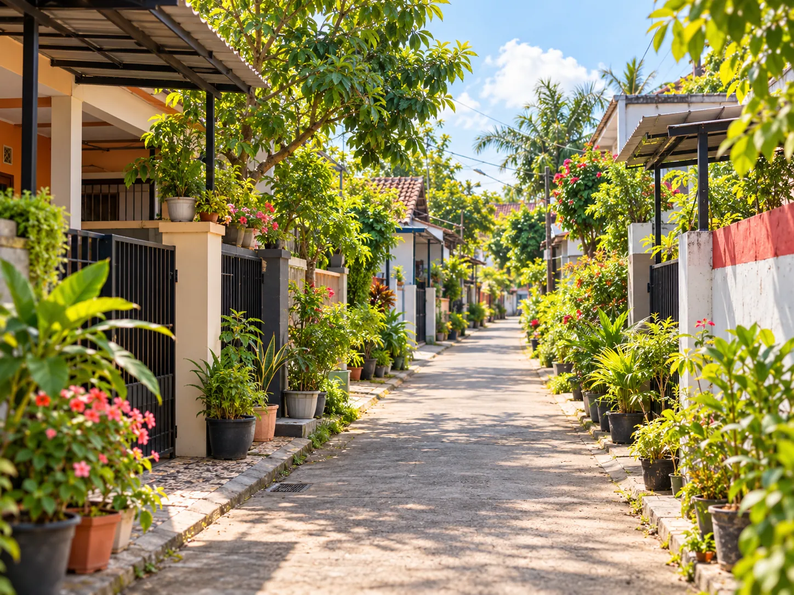
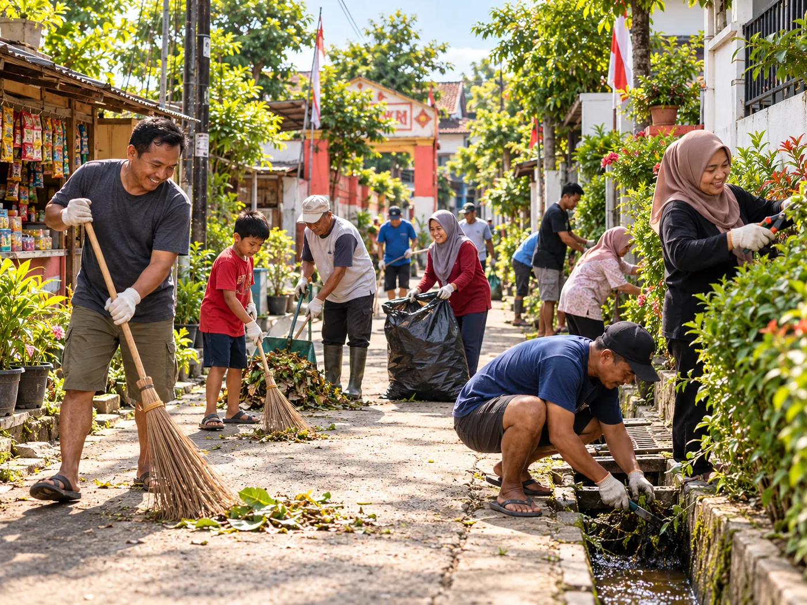
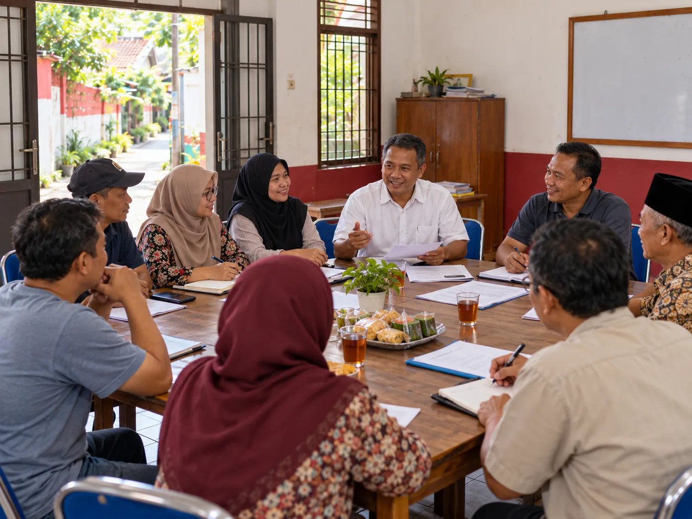
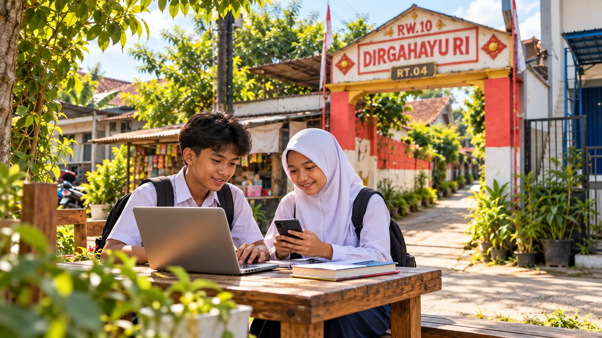
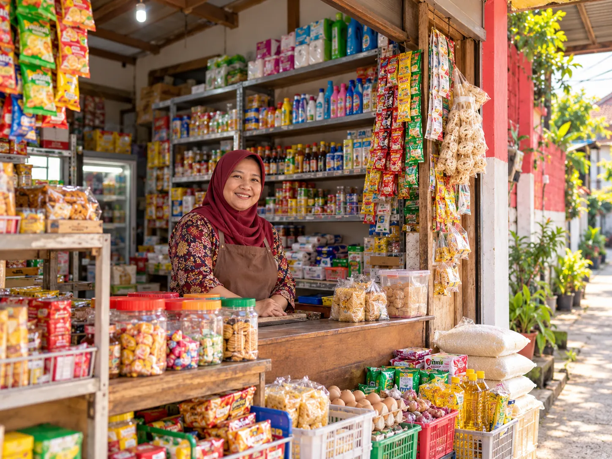
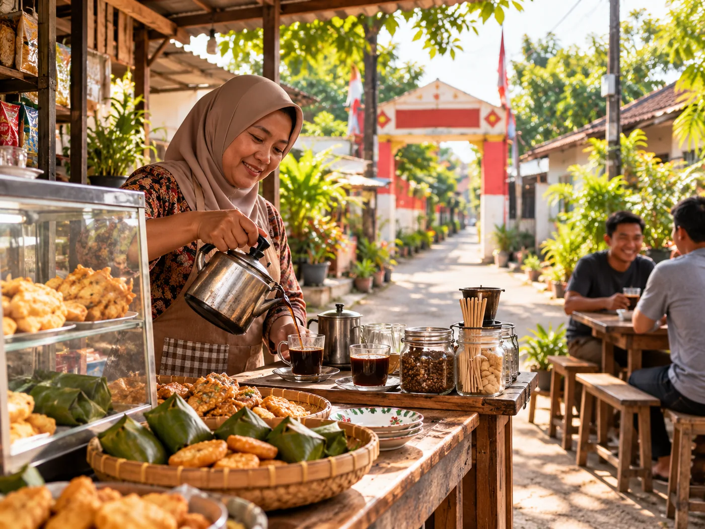
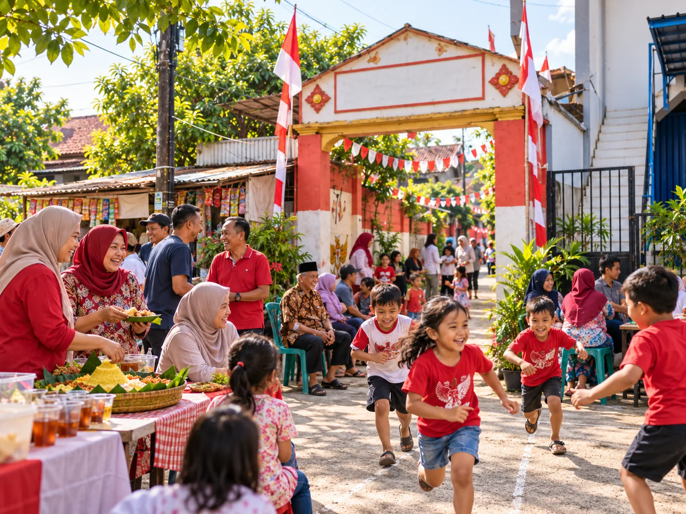

DESA CICADAS DIGITAL · GUNUNG PUTRIDesa yang terhubung,
Desa yang terhubung,
layanan warga lebih dekat.
Satu ruang digital untuk layanan warga RW10, informasi lingkungan, kegiatan, UMKM, dan program komunitas di Desa Cicadas, Kecamatan Gunung Putri.

JELAJAH WILAYAH
Kenali GG H Kape, RT04 →Empat RT, satu RW10.
Pilih wilayah untuk melihat profil, organisasi, berita, dan informasi publik masing-masing RT.
KABAR TERBARUBerita &
Berita &
Pengumuman
Kabar kegiatan dan informasi penting untuk warga RW10 Desa Cicadas.
Hubungi pengurus untuk publikasi ↗
KEGIATAN
Gotong royong dan kebersihan lingkungan
Contoh konten. Berita resmi akan diterbitkan setelah diverifikasi pengurus.
LINGKUNGAN
Mengenal akses masuk wilayah RW10 Desa Cicadas
Gerbang GG H Kape merupakan wilayah RT04; visual pada halaman ini bersifat ilustratif.

INFORMASI
Agenda koordinasi warga dan pengurus
Contoh tampilan berita. Jadwal resmi akan diumumkan di portal.
PROGRAM PENDIDIKAN RW10
WiFi Gratis Pelajar
Salah satu layanan lingkungan untuk mendukung kebutuhan belajar pelajar. Informasi pelaksanaan dan cakupan wilayah mengikuti pengumuman pengurus.
Lihat Detail Program →✓ Fokus pendidikan✓ Verifikasi pengurus✓ Privasi pelajar

PENDAFTARAN
Bagaimana cara mengikuti program?
- Baca informasi dan persyaratan program.
- Hubungi pengurus RT sesuai domisili.
- Pengurus memverifikasi status pelajar dan ketersediaan layanan.
- Akses diberikan secara pribadi setelah disetujui.
Belum tersedia pendaftaran otomatis. Informasi akses dan kredensial jaringan tidak ditampilkan secara publik.
Hubungi Pengurus ↗TENTANG KAMILingkungan Kita,
Lingkungan Kita,
Rumah Bersama.
Cicadas Digital dikembangkan sebagai portal layanan dan informasi warga RW10 Desa Cicadas, Kecamatan Gunung Putri, Kabupaten Bogor. Informasi masing-masing RT dan data warga dilindungi melalui sistem internal berbasis akun.
Pelajari Layanan →LAYANAN DIGITAL
Alur layanan yang jelas
Data warga dikelola di aplikasi internal. Setelah login, akses disesuaikan dengan RT akun masing-masing.
01Masuk aplikasi
Gunakan akun warga atau pengurus yang terdaftar.
02Verifikasi RT
Sistem menentukan cakupan akses dari akun, bukan pilihan pengguna.
03Ajukan layanan
Buat surat, pengaduan, iuran, atau akses layanan yang tersedia.
04Pantau proses
Ketua RT dan Pengurus RW memproses sesuai wewenang.
KEGIATAN WARGAAgenda
Agenda
Lingkungan
Agenda yang sudah disahkan pengurus dapat ditampilkan di sini.
RTBelum dijadwalkan
Rapat koordinasi warga
Jadwal akan diumumkan oleh pengurus.
RWBelum dijadwalkan
Kerja bakti lingkungan
Koordinasi kebersihan fasilitas bersama.
RWBelum dijadwalkan
Kegiatan sosial dan posyandu
Informasi pelaksanaan akan dipublikasikan.
TRANSPARANSI
Keuangan warga, terbuka secara bertanggung jawab.
Ringkasan kas hanya ditayangkan setelah pengurus menyetujui laporan untuk publik. Tidak ada angka keuangan fiktif.
Laporan publik belum tersediaInformasi akan muncul setelah diverifikasi dan dipublikasikan.Akses laporan internal ↗
EKONOMI WARGA
Dukung UMKM Lokal
Contoh kategori UMKM; daftar usaha resmi dapat diterbitkan setelah pemilik memberikan izin.

Toko & SembakoKebutuhan sehari-hari
Minuman & CamilanUsaha kecil lingkunganGALERI LINGKUNGAN
Potret Kebersamaan
Foto ilustratif suasana lingkungan dan aktivitas warga. Untuk dokumentasi resmi RW10, foto dapat diganti setelah diverifikasi pengurus.
Pilih foto untuk memperbesar tampilan.

DESA CICADAS DIGITAL
Masuk Aplikasi Warga →Butuh informasi atau bantuan?
Silakan koordinasi dengan pengurus RT atau RW setempat. Untuk keadaan darurat, gunakan layanan resmi 110 / 112 / 119 sesuai kebutuhan.